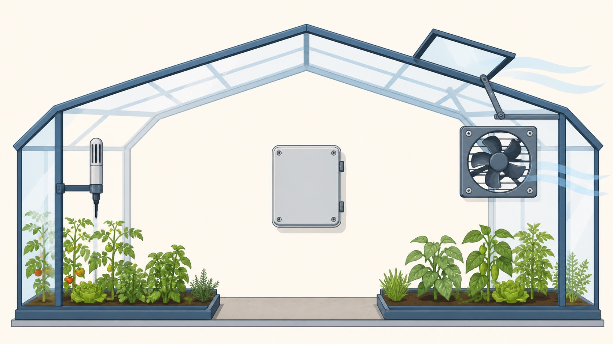

Control systems are where data stops being a spreadsheet and starts moving the world.
This lesson focuses on sensors, actuators and control systems. You will
practise describing how physical measurements become input data, how a
processor applies a rule, and how actuators create output action.
Identifycommon sensors and the quantities they detect
Explainhow actuators produce physical output
Tracecontrol loops using thresholds and repeated readings
sense -> compare -> act -> sense again
The sensor is the messenger. The actuator does the heavy lifting. Mixing them up is how exam marks quietly leave the room.
Why this matters
Cambridge-style answers reward sequence. Listing "temperature sensor, fan" is weaker than explaining the rule that connects them.
Common trap
A closed-loop system uses feedback from sensors. An open-loop system acts without checking the result.
Warm-up hook
A greenhouse gets too hot. Does the temperature sensor cool the greenhouse, or does it just report the bad news?
Click one part. The exam wants the mechanism, not a dramatic biography of the fan.
Knowledge point 1
Sensors capture physical data
Sensor
Detects
Example system
Exam warning
Temperature
Heat / temperature value
Greenhouse fan, thermostat, freezer alarm
It detects temperature; it does not cool the room.
Light
Light intensity
Street lights, phone brightness
The output may be a lamp, not the sensor.
Pressure
Force/pressure level
Burglar mat, weighing scale, tyre pressure
Name what pressure means in context.
Motion / proximity
Movement or nearby object/person
Automatic doors, security lights, parking sensors
Do not say it identifies intent; it detects presence/distance.
Actuators turn output signals into physical action
MotorCreates movement, such as opening a door or spinning a fan.ValveControls flow of water, gas or air.HeaterChanges temperature by producing heat.LightTurns visual warning or illumination on/off.Lock / brakeControls physical safety or movement.
An actuator receives an output signal. It does not decide the rule; the processor/controller does that.
Knowledge point 3
Control systems use rules and feedback

1 Sensor reads2 Processor compares3 Fan and vent act
The solid arrows show input and output signals. The dashed arrow shows feedback: the changed temperature is measured again.
Sense: the temperature sensor produces a reading.
Compare: the controller compares the reading with its threshold.
Act: an output signal switches or adjusts the fan and vent.
Repeat: a new reading checks whether further action is needed.
InputSensor reads the physical condition.
DecisionProcessor compares the reading with a threshold or rule.
OutputSignal is sent to an actuator.
FeedbackNew sensor readings check the result.
Type
How it behaves
Example
Open-loop
Carries out action without checking the output/result.
Basic timer turns sprinkler on for 5 minutes.
Closed-loop
Uses sensor feedback to adjust action.
Soil moisture sensor controls irrigation pump.
Check your reading: why does the sensor not cool the greenhouse?
The sensor only measures temperature and sends a reading. The controller makes the decision, while the fan or vent is the actuator that changes the physical condition.
Interactive tool
Match the sensor and actuator
Worked examples
Writing full control explanations
Your turn
Practice with instant checking
Mistake debugging
Fix the weak control answer
"The light sensor turns on the street lamp."
The light sensor detects light intensity. The controller compares it with a threshold. The lamp is switched on by an output signal/actuator if it is dark enough.
"Closed-loop means the system repeats the same action forever."
Closed-loop means the system uses feedback from sensors to adjust the action. It may stop, start or change output depending on new readings.
Exam-style questions
Questions with expandable MS
Attempt first, then expand the mark scheme. Credit depends on naming the sensor, rule, actuator and feedback accurately.
Summary
Control systems in six exam sentences
SensorInput device that detects a physical quantity.
ProcessorCompares readings with rules or thresholds.
ActuatorOutput device that causes physical action.
ThresholdBoundary value used to decide an action.
Open-loopActs without checking the result.
Closed-loopUses feedback readings to adjust action.
Homework
Clear tasks
Create a table of five sensors: what each detects and one system that uses it.
Write a 5-mark explanation for a street light controlled by a light sensor.
Compare open-loop and closed-loop control using irrigation as the example.
Rewrite this weak sentence: "The sensor starts the pump."
Sensor table: include temperature, light, pressure, motion/proximity and moisture/humidity.
Street light: light sensor reads intensity; controller compares with threshold; lamp output turns on/off; readings repeat.
Irrigation: open-loop timer waters for fixed time; closed-loop uses moisture feedback to decide when to pump.
Correction: the sensor detects dryness; the controller decides; the pump/valve actuator starts.